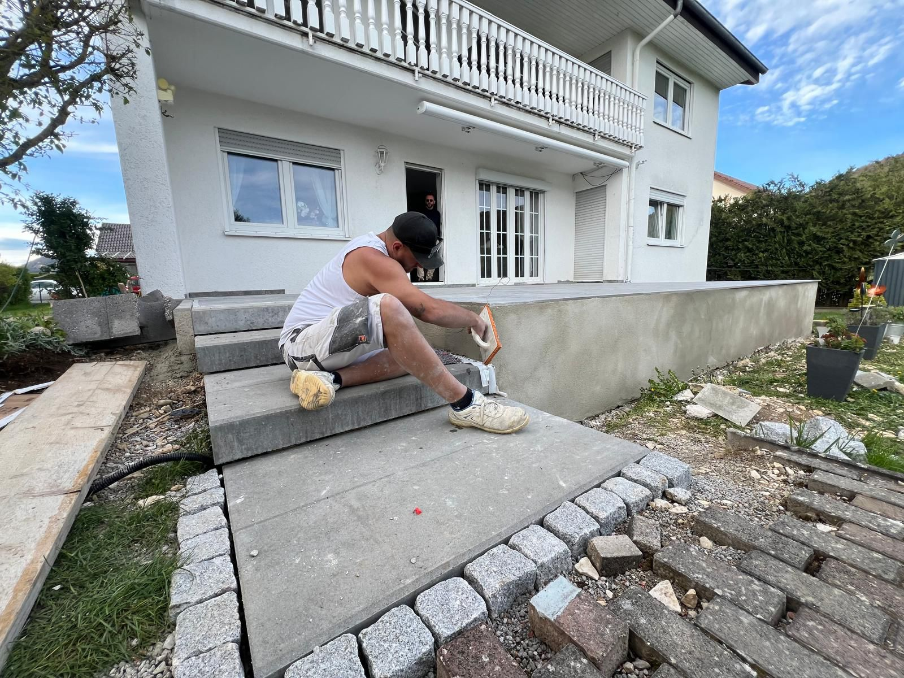

Wir pflastern Einfahrten, Terrassen und Hofeinfahrten in Stockach und der gesamten Bodenseeregion – nicht nur verlegt, sondern gebaut. Mit Gefälleplanung, Entwässerung und sauberer Randanbindung die nächsten Jahrzehnte hält.
Rustemaj Dienstleistungen führt Pflasterarbeiten in Stockach, Singen, Radolfzell, Überlingen, Konstanz und Umgebung durch. Wir arbeiten mit Beton- und Natursteinpflaster, begleiten Sie bei der Materialwahl und planen von Anfang an Gefälle und Entwässerung mit ein – damit kein Wasser steht und die Fläche dauerhaft hält.
Ein sauber gepflastertes Grundstück wertet Ihre Immobilie auf und hält Jahrzehnte ohne großen Wartungsaufwand. Wir bieten Ihnen ein Festpreisangebot nach Besichtigung – kein Rechnen auf eigene Faust.
Einfahrten mit Beton- oder Natursteinpflaster, inkl. Unterbau, Randsteinen und Fugensand. Tragfähig für PKW und leichte Transporter.
Terrassenflächen mit sauberem Gefälle zum Haus weg. Klinker, Betonplatten oder Naturstein – wir beraten Sie zur optimalen Wahl für Ihre Situation.
Große Flächen für Höfe, Betriebsgelände und landwirtschaftliche Nutzung. Schwerlasttauglich auf Anfrage, mit entsprechendem Unterbau.
Gartenwege, Treppenstufen, Beeteinfassungen und Randsteine. Wir passen Material und Optik an Haus und Garten an.

Wir messen die Fläche, prüfen den Untergrund und besprechen Material und Optik.
Alle Positionen klar aufgeführt – Unterbau, Material, Randsteine, Verfugung. Kein Nachkalkulation.
Abtragen, Frostschutzschicht, Tragschicht – der Unterbau entscheidet über die Haltbarkeit.
Präzises Verlegen mit Gefälleplanung, anschließend Verfugen und Abkehren.
Restmaterial abtransportiert, Fläche sauber – fertig zum Befahren.
Eine gepflasterte Einfahrt kostet je nach Material und Größe ca. 60–120 €/m² inkl. Unterbau, Randsteine und Verfugung. Wir erstellen Ihnen nach Besichtigung ein verbindliches Festpreisangebot.
Betonpflaster ist günstig, sehr langlebig und frostbeständig. Naturstein (Granit, Basalt) ist optisch hochwertiger und eignet sich besonders bei repräsentativen Einfahrten. Wir beraten Sie nach Ihren Wünschen und Ihrem Budget.
Eine typische Einfahrt (40–80 m²) ist in 3–7 Arbeitstagen fertiggestellt, je nach Unterbau-Zustand und Wetterlage.
Ja – Terrassen sind ein großer Teil unserer Arbeit in der Region. Wir planen die Neigung für sauberen Wasserablauf und schließen sauber an Haus und Garten an.
Ja, wir sind in der gesamten Bodenseeregion tätig. Rufen Sie uns an oder schreiben Sie uns per WhatsApp für eine kostenlose Besichtigung.
Kostenloses Angebot nach Besichtigung. Festpreis, kein Nachkalkulation. Wir melden uns am selben Tag zurück.